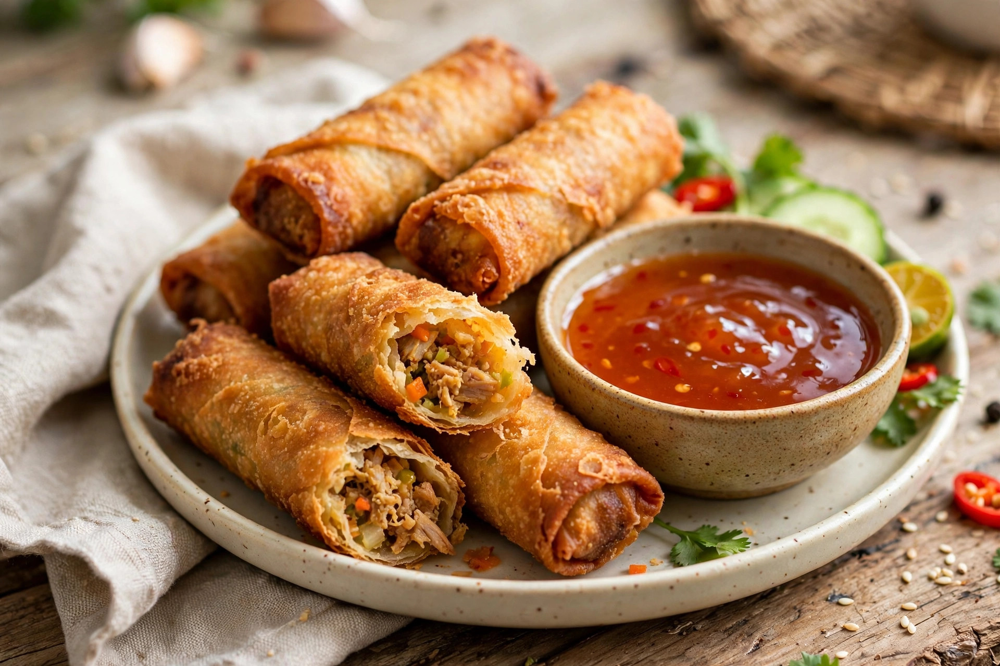

From Wikipedia, the free encyclopedia
| Lumpia | |
|---|---|
 | |
| Type | Spring roll / snack |
| Place of origin | Philippines, Indonesia |
| Main ingredients | Thin wheat wrapper; vegetables, meat, or seafood |
Lumpia are traditional Filipino and Indonesian spring rolls. They consist of a thin, crepe-like wheat wrapper enclosing savoury or sweet fillings, and may be served fresh (lumpiang sariwa) or deep-fried (lumpiang prito). The dish descends from the spring rolls brought to Southeast Asia by Chinese traders, the name deriving from the Hokkien lun-piã.
Lumpiang Shanghai, filled with ground pork and finely chopped vegetables, is the most popular party variety in the Philippines, served with a sweet and sour dipping sauce. Lumpiang gulay is filled with vegetables and sometimes tofu; lumpiang ubod uses heart of palm; lumpiang sariwa is a fresh, unfried roll with a soft wrapper and peanut sauce. In Indonesia, the lumpia of Semarang, filled with bamboo shoots, is a famous regional speciality.
Lumpia are a fixture of Filipino celebrations and gatherings, frequently prepared in large batches for fiestas and birthdays. Filipino-American communities have popularised them in the United States, where they are commonly served as appetisers.